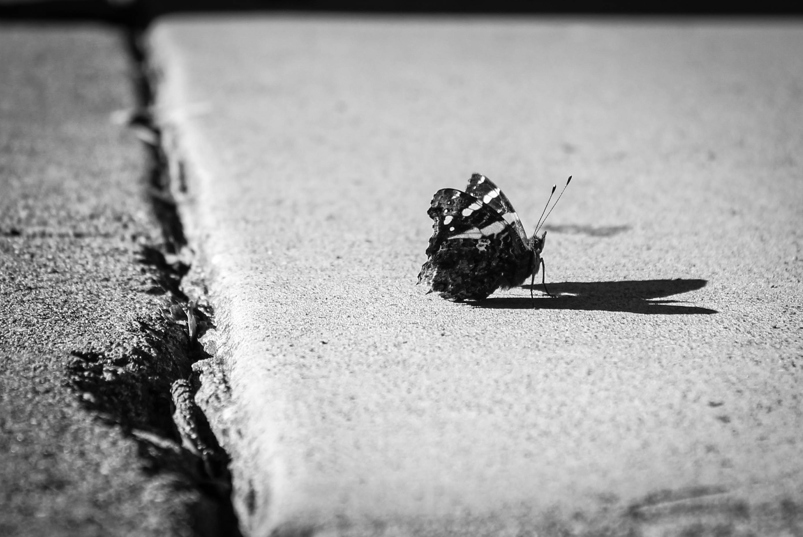
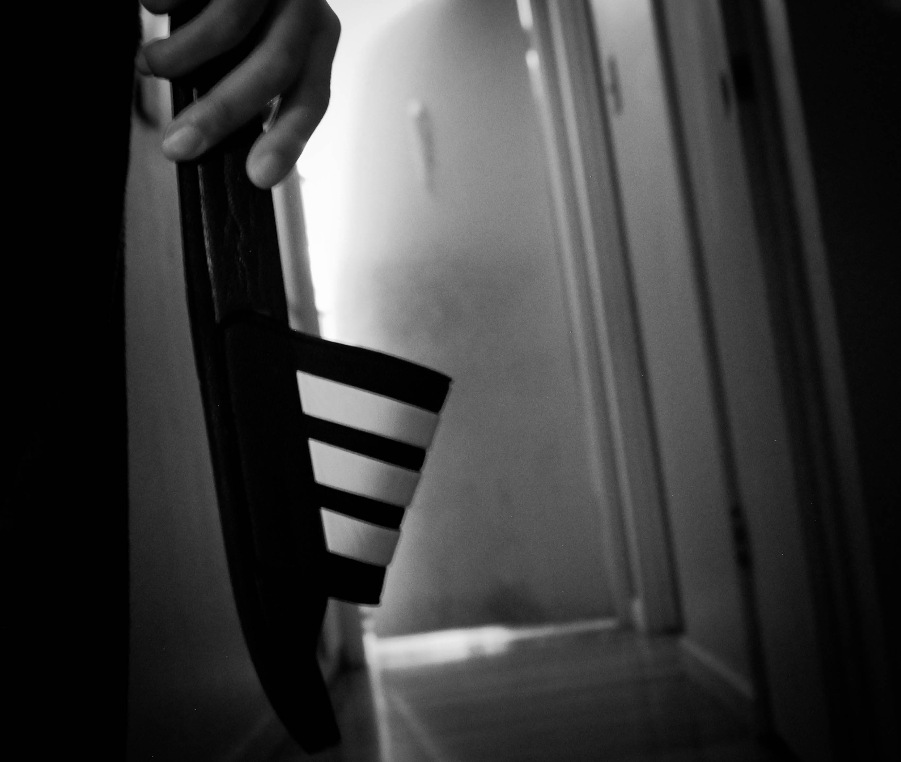
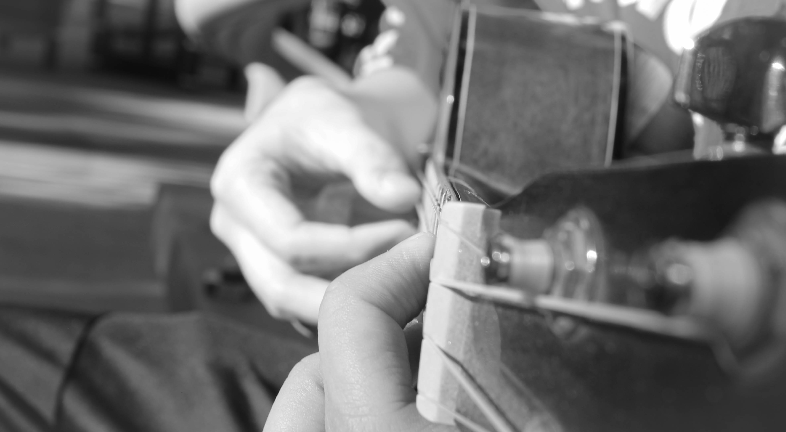
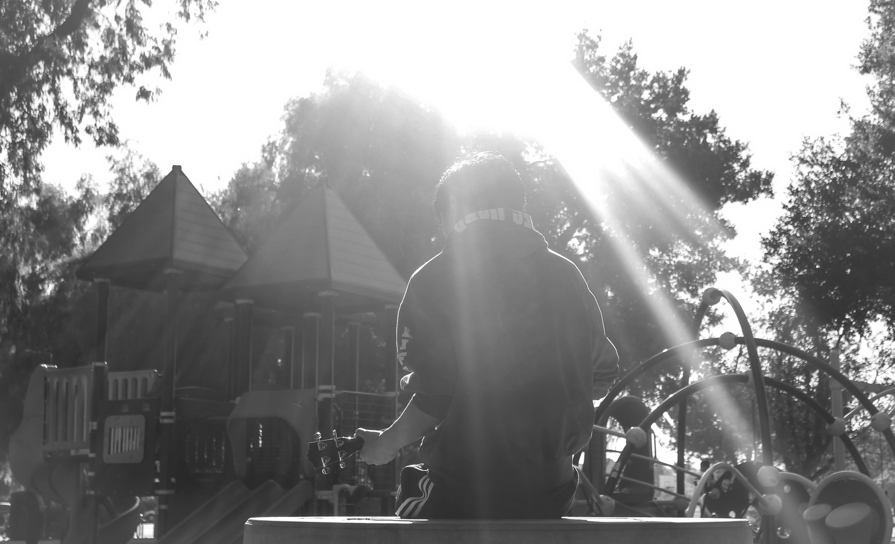
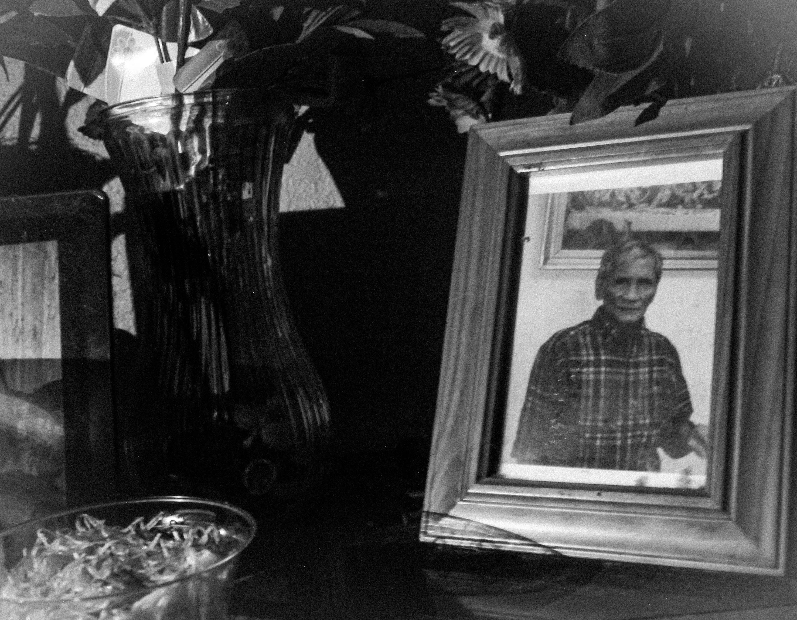

A normal day
Life flashes

Death doen't descriminate

And it visited one day

So I play to remember

To remember he's within me

Just like any normal day
This project was made during my Phot-40 class and created using my DSLR camera and adobe lighroom. Everyone has experienced loss. When I was young I lost my grandpa, lolo in tagalog, to lung cancer. He was a chain smoker and eventually the consenquences caught up with him. I dont remember much of his passing, but more of his life and the influnce he had on me. I carry some of his personality within me. He made his own guitars and lulled me to sleep as a kid. He inspired me to play the ukulele and everytime I strum the chords, I remember him.
On a side note: the reason I had death hold a slipper was to bring out his humorous side. I don't think he feared Death, instead he would make our family smile while lying on his bed. Even though he was dying, he would still be that grandpa and whip us if we still misbehaved.